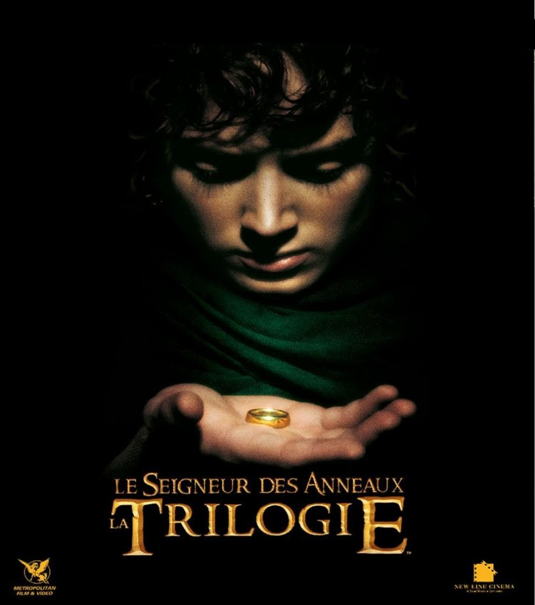

Cee
Dream baby dream
Simplonienne promo#4 passionnée d'Art et de Design
I ♥
- Le Seigneur des anneaux
Un jeune Hobbit nommé Frodon Sacquet, hérite d'un anneau. Mais il se trouve que cet anneau est L'Anneau UNIQUE, un instrument de pouvoir absolu crée pour Sauron, le Seigneur des ténèbres...
- Inception
Le « rêve partagé » est une nouvelle technologie, développée à l'origine par les États-Unis pour permettre à ses soldats de s'entraîner « en rêve ». Détournée de cet usage, elle permet à des extracteurs hors-la-loi de prélever des informations dans le subconscient de certaines personnes, pour le compte d'autres personnes qui les payent.
- Away We Go
Burt Farlander et Verona De Tessant apprennent qu'ils vont devenir parents. Toutefois ils détestent la ville de province où ils habitent et où plus rien ne les retient car les parents de Burt déménagent.
Films
- Les mots sont des fenêtres...
- Harry Potter
- Hunger Games
Livres
- Ben Howard
- We Are The City
- Bruce Springsteen